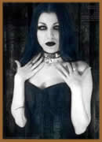

Por acaso você já viu
um pessoal que se veste todo de preto, geralmente maquiado com
olhos escuros e pele pálida e que são conhecidos
por visitarem cemitérios à noite? Eles são
chamados de góticos e costumam vagar pelas grandes metrópoles
do Brasil assustando as pessoas mais conservadoras com seu visual
pesado e sombrio.
O
estilo gótico surgiu na cena pós-punk dos anos 80
com bandas como Joy
Division, The
Sisters of Mercy, Bauhaus,
Siouxsie and the Banshees, The
Cure entre outras. O termo gótico define um estilo
arquitetônico medieval de igrejas dos séculos 12
a 15 na Europa. Durante a Idade Média, a invasão
de povos bárbaros influenciou a arte européia com
imagens de monstros como as gárgulas e os vampiros, por
exemplo. Daí os góticos tiraram o gosto pelo sinistro
e uniram ao ideal romântico de viver a vida – o sofrimento
por amor, o interesse pelo além etc.
Para Javier Muniain, 17, que tem o estranho apelido
de "Anjo em Pranto", o gótico é uma cultura.
"Não é algo fechado. Cada gótico
tem sua idéia do que é ser gótico",
diz. Ele mesmo é um integrante desta tribo e explica que
os góticos adoram literatura, artes plásticas, música
e cinema. Ele quer ser cineasta, estuda teatro e tem uma vida
como qualquer outro garoto da sua idade – estuda, namora,
freqüenta baladas góticas com os amigos. É
claro, que tudo em sua vida está muito ligado à
um mundo de trevas. Lembra do Batman? O visual gótico é
como o das histórias deste herói – cidades
escuras, pessoas atormentadas e um mundo de fantasias que faz
a gente ter medo da própria sombra. Segundo Javier, o rótulos
são uma limitação e a personalidade da pessoa
não é influenciada pelo pensamento gótico,
mas ao contrário – pessoas que já tem uma
inclinação para gostar de coisas mórbidas
é que se identificam com o mundo gótico.
Elen Cristina de Souza, 17, também acredita
que o mundo gótico acolhe pessoas que já se sentem
"diferentes". "É um estilo especial
de viver, uma filosofia diferente, um mundo mais romântico",
diz. Elen, que só sai depois das 20 horas, explica o interesse
que muitos góticos têm por cemitérios (eles
pulam os muros de madrugada e muitas vezes são pegos pela
polícia): "É um lugar calmo para refletir
sobre a vida onde as pessoas conversam, bebem vinho e, às
vezes, fazem amor".
Muitas pessoas acham que os góticos incentivam
o suicídio,
mas, para Elen, suicidar-se nada tem a ver com ser gótico,
mas com ter problemas e querer fugir deles. Ela diz que já
pensou em suicídio por causa de uma crise de depressão
– doença muito comum entre adolescentes – e
não por conta da filosofia de sua tribo. Elen, como a maioria
dos góticos de São Paulo, freqüenta o Madame
Satã – bar de São Paulo onde todo mundo costuma
dançar sozinho virado para a parede como forma de introspecção.
Um lugar ótimo para conhecer gente diferente
e encontrar pessoas que pensam como você, é a Internet.
Muitos góticos têm blogs e sites o que facilita o
encontro e a comunicação entre eles. Ana Lúcia,
20, é uma gótica escritora e fotógrafa que
tem dois blogs o Câmara Obscura e o Goth. "A Internet
é um tremendo espaço para colocar suas idéias
e falar sobre cultura", explica Ana. E, além
disso, é grátis! Todo mundo pode ter seu site e
seu blog e trocar informações e conhecer gente.
Ana
não anda sempre vestida "à caráter"
- com roupas escuras e maquiagem pesada. Ela explica que teve
de se adaptar ao mundo: "No trabalho, por exemplo, não
dá para ir vestida assim". Ana estuda jornalismo
e já faz fotos no melhor estilo gótico.
Jogos de RPG costumam instigar esse lado fantasioso
dos góticos porque assim eles podem viver um personagem,
ser alguém diferente. Segundo Ana, esse jogo "abre
campo para a imaginação das pessoas".
Parece que para todos os góticos entrevistados,
o visual importa bastante, mas ao contrário do que a maioria
das pessoas costumam pensar, ele é apenas uma maneira de
exteriorizar o que esse pessoal tem dentro de si. Usar roupas
escuras, usar maquiagem e agir de um jeito "meio estranho",
como diz Ana, é só uma maneira de a pessoa expressar
melhor ao mundo quem é de verdade.
Todos eles se tornaram góticos não
porque o visual os atraiu, mas porque já se sentiam diferentes
e acabaram achando gente que pensava como eles.
Texto original
de Ana Cândida